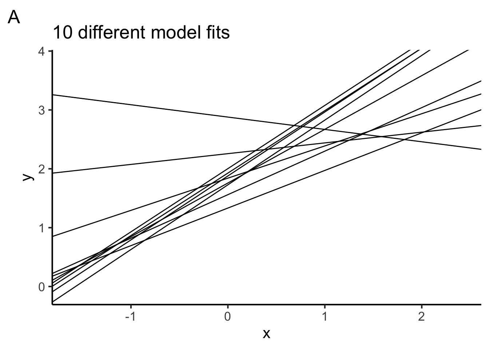
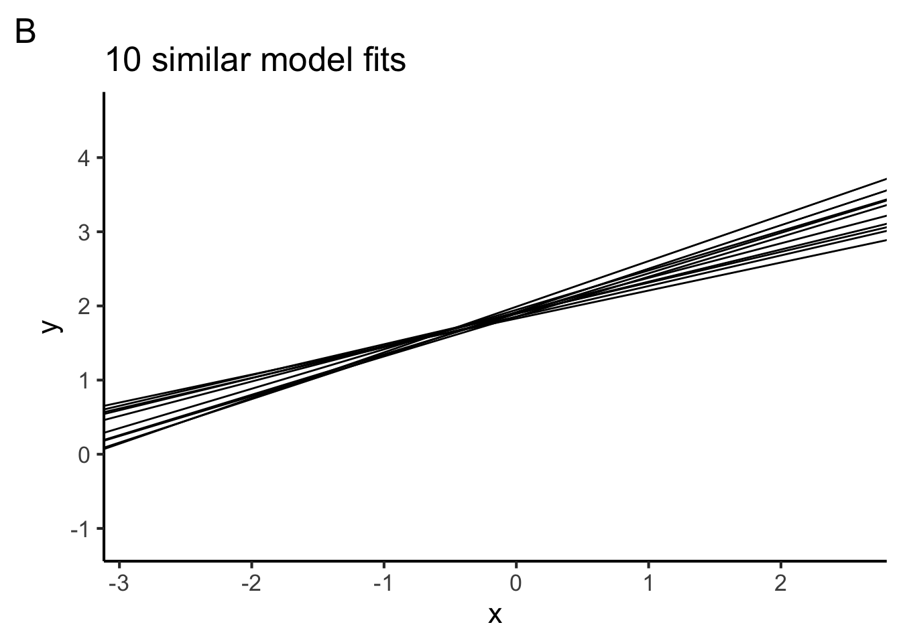
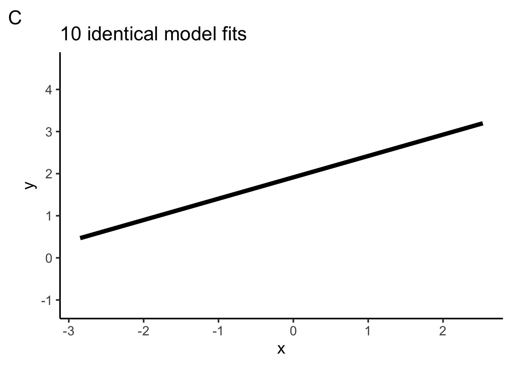

You have 1 hours and 30 minutes to complete the exam.
The exam is closed book/note/computer/phone except for the provided reference sheets
If you need to use the restroom, leave your exam and phone with the TAs
If you finish early, you may turn in your exam and leave early
Preliminary questions
Please complete these questions before the exam begins.
(1 point) What is your full name?
(1 point) What is your penn ID number?
(1 point) What is your lab section TA’s name?
(1 point) Who is sitting to your left?
(1 point) Who is sitting to your right?
The data
Suppose we want to study the effect hours practicing an instrument has on your ultimate skill level with the instrument. We study 500 participants who are learning to play either piano or guitar. Below we explore these data in a few ways.
Suppose we fit a model represented by the following equation, where \(x_1\) is the number of hours spent practicing, \(x_2\) is the instrument, and \(y\) is the skill acheived:
\(y = b_0 + b_1x_1 + b_2x_2\)
Which of the following would work to estimate the free parameters of this model? Choose one.
True or false, when performing gradient descent on a nonlinear model, we might arrive at a local minimum and miss the global one.
True or False, given the model above, gradient descent and ordinary least squares would both converge on approximately the same parameter estimates.
The following plots a linear model of the formula y ~ 1 + x and one data point. Which dashed line represents the model’s residual for this point? Circle one.
Which of the following could be the model specification in R? Choose all the apply.
In the code, SSE() is a function we have defined to calculate the sum of squared errors. Which of the following correctly describes the steps of calculating SSE? Choose one.
Using the estimated parameters from lm(), fill in the blanks to calculate the model’s predicted value of skill for a participant who played the piano for 20 hours. You may round to the first decimal place.
Which of the following is the most likely value of the sum of squared errors when the parameters \(b_0\), \(b_1\), and \(b_2\) are all set to 0? Choose one.
3 Model Accuracy
Questions in section 3 refer to the following summary() of the same model from section 2:
Which of the following is a correct interpretation of the model’s \(R^2\) value? Choose one.
Which of the following is true about the model’s \(R^2\)? Choose all that apply.
Which one of the following is true about \(R^2\)? Use the below formula as a guide and choose one.
Which of the following is a correct statement about estimating \(R^2\) for the population? Choose all that apply.
4 Model Accuracy in R
Questions in section 4 refer to the following code:
# we divide the data set.seed(2) splits <-vfold_cv(data, v =20)# model secification model_spec <-linear_reg() %>%set_engine(engine ="lm") # add a workflowour_workflow <-workflow() %>%add_model(model_spec) %>%add_formula(skill ~ hours + instrument_recoded) # fit models fitted_models <-fit_resamples(object = our_workflow, resamples = splits) fitted_models %>%collect_metrics()
# A tibble: 2 × 6
.metric .estimator mean n std_err .config
<chr> <chr> <dbl> <int> <dbl> <chr>
1 rmse standard 23.8 20 0.762 Preprocessor1_Model1
2 rsq standard 0.468 20 0.0267 Preprocessor1_Model1
In the output above, what is the \(R^2\) estimate for the population?
In the code above, which method did we use to estimate \(R^2\) on the population? Choose one.
In the code above, how many models did we fit when calling fit_resamples()?
You are no longer doing a valid cross-validation if you change (choose all that apply):
5 Model reliability
True or false, as we collect more data, the confidence interval around our parameter estimates gets bigger (wider).
Model reliability asks how certain we can be about our parameter estimates. Why is there uncertainty around our parameter estimates?
True or false, a model with low reliability also has low accuracy.
Suppose we conduct an experiment by drawing a random sample from the population. We fit a linear model to these data. Then we repeat our experiment 10 times, fitting the same model each time. Which figure could show the fitted models for the 10 experiments? Choose all that apply.



6 Nonlinear models
Circle the figure below that plots the model represented by the equation \(y = \beta_0 + \beta_1x_1 + \beta_2x_1^2\)
Which of the model specifications expresses a cubic polynomial model in R?
True or false, we can use lm() to fit a quadratic polynomial.
Which of the following aspects of model building apply to nonlinear models? Choose all that apply.
7 Classification
True or false, logistic regression is a linear classificaiton model.
What is the difference between regression and classification?
What accuracy metric(s) have we been applying to classification models? Choose all that apply.
True or false, each of the following figures can be modeled with a linear classifier.
8 Classification in R
Which of the following can be used to fit a logistic regression model in R? Choose all that apply.
True or false, the link function in a generalized linear model must be the logistic function.
Which of the following fits a logistic regression model in R? Choose all that apply.
# code Aglm(y ~ x, data = data, family ="binomial")# code Bdata %>%specify(y ~ x) %>%fit() # code C linear_reg %>%set_engine("lm") %>%fit(y ~ x, data = data)
What 3 elements do all generalized linear models have?